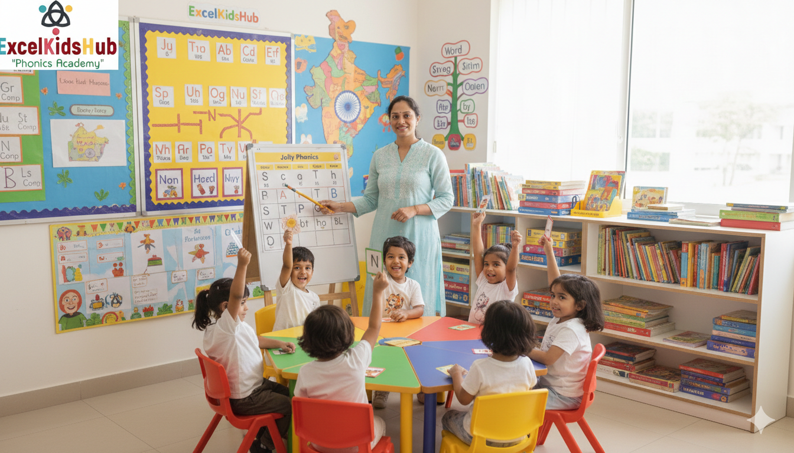

Helping children become confident readers through research-based literacy instruction.
Reserve Free Demo Class Contact UsPhonics is a proven method of teaching children how written letters and letter combinations correspond to spoken sounds. By learning this connection, children develop the ability to decode new words, read fluently, and build vocabulary naturally — without guessing.
Language learning experts agree that structured phonics instruction delivers stronger long-term reading outcomes than memorisation-based approaches. Children who learn phonics often become more confident readers earlier in life.
Dhanori is a vibrant community with families seeking high-quality education support. At ExcelKidsHub, we understand the local needs and schedule challenges of Pune parents — so we offer phonics classes that fit busy routines, both online and in-person.
Families from Vishrantwadi, Lohegaon, Porwal Road, and surrounding Pune localities choose our phonics program because it is research-based, systematic, and child-centred.
Understanding letter sounds, patterns and early decoding strategies — perfect for early readers.
Build reading speed and accuracy with systematic practice and engaging activities.
Develop deeper reading comprehension and clear written expression skills.

Swati Deshmukh is a UK-Certified Jolly Phonics Trainer and literacy specialist with over 10 years of experience teaching English to children. Her method combines a systematic phonics curriculum with engaging, child-friendly activities.
Her philosophy is simple: when a child learns to read confidently, all areas of academic success become easier. She works with each student individually to build skills step by step.
📍 Based in Dhanori, Pune | 📞 +91 87931 35679
"My child’s reading improved so quickly after joining ExcelKidsHub!"
– Parent, Dhanori ⭐⭐⭐⭐⭐"The classes are structured, supportive and highly effective."
– Parent, Lohegaon ⭐⭐⭐⭐⭐Children aged 4–12 years are ideal candidates, but phonics benefits learners of all ages.
Yes! We offer flexible online batches for parents who prefer remote learning.
Many children show noticeable improvement in reading fluency within 8–12 weeks of consistent phonics learning.